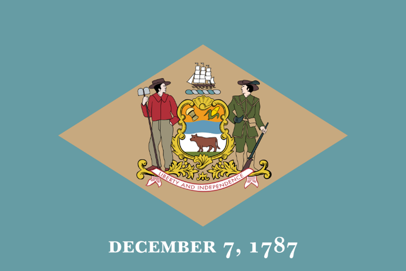

Delaware
"Delaware was the first state to ratify the U.S. Constitution, earning it the title of 'The First State.'"
Delaware is a small state in the eastern United States, located on the Atlantic coast. It is the second smallest state by area and the sixth most densely populated state. It has three counties: New Castle, Kent, and Sussex. Its capital is Dover and its largest city is Wilmington. It is known as the “First State” because it was the first to ratify the U.S. Constitution in 1787. It is also called the “Diamond State” because of its strategic location and the “Blue Hen State” because of its official state bird.
Delaware has a rich and diverse history, dating back to the early colonization of North America by European settlers. It was originally inhabited by Native American tribes such as the Lenni Lenape, the Susquehanna, the Nanticoke, and others. It was explored by the Dutch, the Swedish, and the English, who established trading posts and settlements along the Delaware River and Bay. It was part of the Dutch colony of New Netherland, the Swedish colony of New Sweden, and the English colony of Pennsylvania, until it declared its independence in 1776. It was one of the Thirteen Colonies that rebelled against British rule and formed the United States of America. It was the site of several important events and battles during the American Revolution, such as the Battle of Cooch’s Bridge and the Battle of Brandywine. It was also a slave state that remained loyal to the Union during the Civil War.
Delaware has a diverse and dynamic economy, based on agriculture, manufacturing, banking, and tourism. It is one of the leading producers of poultry, especially broiler chickens, in the country. It also grows corn, soybeans, wheat, and other crops. It has a strong industrial sector, with major companies such as DuPont, Chemours, and Gore-Tex operating in the state. It is also a major financial center, with many banks and corporations incorporated in the state, due to its favorable tax laws and business-friendly regulations. It attracts millions of visitors every year, who enjoy its beaches, parks, museums, and historical sites.
Delaware has a vibrant and diverse culture, influenced by its Native American, European, African, and Asian heritage. It has a variety of festivals, events, and traditions, such as the Delaware State Fair, the Dover Days Festival, the Apple Scrapple Festival, and the Return Day Parade. It has a rich musical and artistic scene, with genres such as jazz, blues, rock, and hip hop, and artists such as Cab Calloway, George Thorogood, and Joe Biden. It has a distinctive cuisine, featuring dishes such as scrapple, chicken and dumplings, crab cakes, and peach pie. It has a proud sports legacy, with teams such as the Delaware Blue Hens, the Wilmington Blue Rocks, and the Delaware 87ers, and athletes such as Elena Delle Donne, Dwayne Henry, and Delino DeShields.